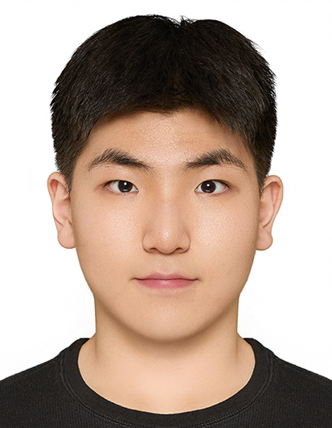

Multimodal AI · Data Science
I am an undergraduate student interested in bridging Software Engineering and Data Science. My research focuses on Multimodal Learning, particularly on aligning and fusing visual, textual, and temporal signals. I am interested in extending this line of research toward vision-language models.
Supported course instruction in Python and C/C++ as both a teaching assistant and assistant instructor. Provided hands-on guidance for 20+ students and assisted in strengthening their understanding of algorithms and data structures.
Email: sungjun020521@gmail.com
GitHub: github.com/Mutatio02